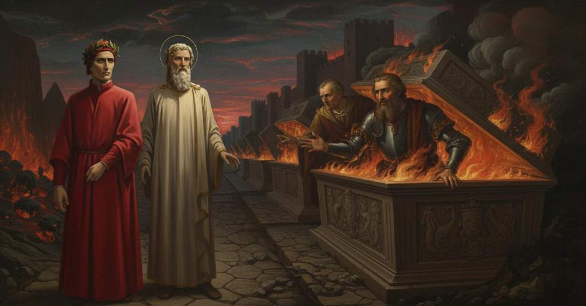

Inferno — Canto 10

Nel cerchio degli eretici, Dante parla con Farinata, che gli profetizza l'esilio, e con Cavalcante, che crede erroneamente morto il figlio Guido, apprendendo poi la natura della preveggenza dei dannati. In the circle of the heretics, Dante speaks with Farinata, who prophesies his exile, and with Cavalcante, who mistakenly believes his son Guido is dead, learning about the nature of the damned's foresight. 異端者の圏で、ダンテは追放を予言するファリナータや、息子グイドが死んだと誤解するカヴァルカンテと語らい、罪人たちの予知能力の性質について知る。
1
Ora sen va per un secreto calle,
Now my master goes along a secret path,
今、隠れた小道を行く、
2
tra ’l muro de la terra e li martìri,
between the wall of the city and the torments,
都の城壁と刑罰の場との間を、
3
lo mio maestro, e io dopo le spalle.
my master, and I behind his shoulders.
我が師は、そして私はその背後に。
4
«O virtù somma, che per li empi giri
“O supreme virtue, who through the impious circles
「おお、至高の徳よ、あなたはその邪な圏を」
5
mi volvi», cominciai, «com’ a te piace,
turn me,” I began, “as it pleases you,
「意のままに私を導かれる」と私は始めた、「どうか、」
6
parlami, e sodisfammi a’ miei disiri.
speak to me, and satisfy my desires.
「私に語り、我が望みを満たしたまえ。」
7
La gente che per li sepolcri giace
The people who lie within the sepulchers—
「その墓の中に横たわる人々は」
8
potrebbesi veder? già son levati
can they be seen? Already are lifted
「見ることができるでしょうか。すでに蓋はすべて」
9
tutt’ i coperchi, e nessun guardia face».
all the lids, and no one stands guard.”
「開けられており、見張りもおりませぬ。」
10
E quelli a me: «Tutti saran serrati
And he to me: “All will be sealed shut
すると師は私に言った。「すべては閉じられるだろう」
11
quando di Iosafàt qui torneranno
when from Jehoshaphat they return here
「ヨサファトの谷から彼らがここへ戻る時に」
12
coi corpi che là sù hanno lasciati.
with the bodies that up there they have left.
「彼らが地上に残してきた肉体と共にな。」
13
Suo cimitero da questa parte hanno
Their cemetery on this side have
「この一角に墓所を構えているのは」
14
con Epicuro tutti suoi seguaci,
with Epicurus all his followers,
「エピクロスとそのすべての徒党であり、」
15
che l’anima col corpo morta fanno.
who make the soul die with the body.
「彼らは魂が肉体と共に滅びると説く。」
16
Però a la dimanda che mi faci
Therefore, to the question that you ask me
「それゆえ、そなたが私にする問いには」
17
quinc’ entro satisfatto sarà tosto,
here within you will soon be satisfied,
「この中ですぐに答えが得られるだろう、」
18
e al disio ancor che tu mi taci».
and also to the desire that you keep silent.”
「そなたが私に黙している望みにもな。」
19
E io: «Buon duca, non tegno riposto
And I: “Good leader, I do not hold hidden
すると私は言った。「善き導き手よ、私が心を隠して」
20
a te mio cuor se non per dicer poco,
my heart from you except to speak little,
「いるのは、ただ言葉少なにするためであり、」
21
e tu m’hai non pur mo a ciò disposto».
and you have not just now disposed me to this.”
「あなたこそが、今に限らず私をそう仕向けられたのです。」
22
«O Tosco che per la città del foco
«O Tuscan, who through the city of fire
「おお、火の都を通り抜けて行くトスカーナ人よ、
23
vivo ten vai così parlando onesto,
go alive, thus speaking honorably,
生きながら、かくも気高く語りながら、
24
piacciati di restare in questo loco.
may it please you to stop in this place.
どうかこの場所に留まりたまえ。
25
La tua loquela ti fa manifesto
Your speech makes you manifest
汝の話ぶりは、汝がかの高貴な祖国の
26
di quella nobil patrïa natio,
as a native of that noble fatherland
生まれであることを明らかにしてくれる、
27
a la qual forse fui troppo molesto».
to which perhaps I was too troublesome».
その国に、私はおそらく厳しすぎたのであろうが」。
28
Subitamente questo suono uscìo
Suddenly this sound came forth
突如としてこの声が聞こえてきた、
29
d’una de l’arche; però m’accostai,
from one of the tombs; so I drew,
墓の一つから。それゆえ私は近寄った、
30
temendo, un poco più al duca mio.
fearing, a little closer to my guide.
恐れながら、わが師の方へと少しばかり。
31
Ed el mi disse: «Volgiti! Che fai?
And he said to me: «Turn around! What are you doing?
すると師は私に言った、「振り返れ！ 何をしている？
32
Vedi là Farinata che s’è dritto:
See there Farinata who has stood erect:
見よ、あそこにファリナータが身を起こしているのを。
33
da la cintola in sù tutto ’l vedrai».
from the waist up you will see all of him».
腰から上は、そのすべてが見えるだろう」。
34
Io avea già il mio viso nel suo fitto;
I already had my face fixed on his;
私はすでに私の顔を彼の顔に据えていた。
35
ed el s’ergea col petto e con la fronte
and he rose up with his chest and with his brow
そして彼は胸を張り、額を上げて立ち上がった、
36
com’ avesse l’inferno a gran dispitto.
as if he held Hell in great scorn.
まるで地獄をものともせぬかのように。
37
E l’animose man del duca e pronte
And the bold and ready hands of my guide
そして師の勇ましくも素早い両手が
38
mi pinser tra le sepulture a lui,
pushed me among the sepulchers toward him,
私を墓々の間から彼の方へと押しやり、
39
dicendo: «Le parole tue sien conte».
saying: «Let your words be measured».
言った、「汝の言葉は簡潔にせよ」。
40
Com’ io al piè de la sua tomba fui,
When I was at the foot of his tomb,
私が彼の墓の足元に着くと、
41
guardommi un poco, e poi, quasi sdegnoso,
he looked at me a little, and then, almost disdainful,
彼は私をしばし見つめ、そして、ほとんど侮るように、
42
mi dimandò: «Chi fuor li maggior tui?».
he asked me: «Who were your ancestors?».
私に尋ねた、「汝の先祖は何者であったか？」。
43
Io ch’era d’ubidir disideroso,
I, who was desirous of obeying,
私は、従うことを望んでいたので、
44
non gliel celai, ma tutto gliel’ apersi;
did not hide them from him, but opened all to him;
それを彼に隠さず、すべてを打ち明けた。
45
ond’ ei levò le ciglia un poco in suso;
at which he raised his brows a little upward;
すると彼は眉をわずかに吊り上げた。
46
poi disse: «Fieramente furo avversi
then said: «Fiercely were they adverse
それから言った、「彼らは激しく敵対した、
47
a me e a miei primi e a mia parte,
to me and to my forebears and to my party,
私と、わが先祖と、わが党派に。
48
sì che per due fïate li dispersi».
so that for two times I scattered them».
ゆえに二度にわたって、私は彼らを追放したのだ」。
49
«S’ei fur cacciati, ei tornar d’ogne parte»,
«If they were driven out, they returned from every side»,
「彼らが追放されたなら、彼らはあらゆる方角から帰還した」、
50
rispuos’ io lui, «l’una e l’altra fïata;
I answered him, «the one and the other time;
と私は彼に答えた、「一度目も二度目も。
51
ma i vostri non appreser ben quell’ arte».
but yours have not learned that art well».
しかし、あなたの一族はその術をよく学ばなかった」。
52
Allor surse a la vista scoperchiata
Then rose into uncovered view
その時、開かれた墓の中から現れた
53
un’ombra, lungo questa, infino al mento:
a shade, beside that one, up to the chin:
一つの影が、この者のかたわらに、顎のところまで。
54
credo che s’era in ginocchie levata.
I believe he had raised himself on his knees.
膝をついて立ち上がったものと私は思う。
55
Dintorno mi guardò, come talento
He looked around me, as if a desire
私の周りを見回した、あたかも切望するように
56
avesse di veder s’altri era meco;
he had to see if another was with me;
他に誰か私と共にいるか見たいと。
57
e poi che ’l sospecciar fu tutto spento,
and after his suspicion was all spent,
そしてその疑いがすっかり消えると、
58
piangendo disse: «Se per questo cieco
weeping he said: “If through this blind
泣きながら言った。「もしそなたがこの盲目の
59
carcere vai per altezza d’ingegno,
prison you go by height of intellect,
牢獄を、その優れた才知によって行くのであれば、
60
mio figlio ov’ è? e perché non è teco?».
where is my son? and why is he not with you?”
私の息子はどこにいるのか？なぜそなたと一緒ではないのか？」。
61
E io a lui: «Da me stesso non vegno:
And I to him: “I do not come by myself:
そこで私は彼に言った。「私自身の力で来たのではありません。
62
colui ch’attende là, per qui mi mena
he who waits there leads me through here,
あそこで待つ方が、私をここへ導かれるのです、
63
forse cui Guido vostro ebbe a disdegno».
one whom your Guido perhaps had in disdain.”
おそらく、そなたのグイドが軽蔑した方の許へ」。
64
Le sue parole e ’l modo de la pena
His words and the mode of punishment
彼の言葉と、その罰の様子から、
65
m’avean di costui già letto il nome;
had already to me read this one’s name;
私はすでにこの者の名を読み取っていました。
66
però fu la risposta così piena.
therefore my answer was so complete.
それゆえに、私の答えはかくも十分なものであったのです。
67
Di sùbito drizzato gridò: «Come?
Suddenly straightened up, he cried: “How?
突然身を起こして彼は叫んだ。「何だと？
68
dicesti “elli ebbe”? non viv’ elli ancora?
Did you say ‘he had’? Does he not live still?
『彼が軽蔑した』と申したか？彼はもう生きてはおらぬのか？
69
non fiere li occhi suoi lo dolce lume?».
Does the sweet light not strike his eyes?”
彼の両の目に、甘美な光は射さぬのか？」。
70
Quando s’accorse d’alcuna dimora
When he became aware of some delay
私が返答を前にして、いくらかためらうのを
71
ch’io facëa dinanzi a la risposta,
that I was making before my reply,
彼が察した時、
72
supin ricadde e più non parve fora.
he fell back supine and appeared no more outside.
仰向けに倒れ込み、二度と外には姿を見せなかった。
73
Ma quell’ altro magnanimo, a cui posta
But that other magnanimous one, at whose request
しかし、かの気高き魂は、私がそのために
74
restato m’era, non mutò aspetto,
I had remained, did not change his aspect,
立ち止まっていたのだが、表情を変えず、
75
né mosse collo, né piegò sua costa;
nor move his neck, nor bend his side;
首も動かさず、脇腹も曲げなかった。
76
e sé continüando al primo detto,
and continuing from his first speech,
そして最初の言葉を続け、
77
«S’elli han quell’ arte», disse, «male appresa,
«If they have learned that art badly,» he said,
「もし彼らがその術を」と言った、「拙く学んだとて、
78
ciò mi tormenta più che questo letto.
«that torments me more than this bed.
それはこの寝床よりも私を苦しめる。
79
Ma non cinquanta volte fia raccesa
But not fifty times will be rekindled
だが、ここに君臨する貴婦人の顔が
80
la faccia de la donna che qui regge,
the face of the lady who rules here,
五十回と燃えぬうちに、
81
che tu saprai quanto quell’ arte pesa.
before you will know how much that art weighs.
お前はその術がいかに重いかを知るだろう。
82
E se tu mai nel dolce mondo regge,
And so may you return to the sweet world,
そして、お前がいつか甘美な世界に戻れるように、
83
dimmi: perché quel popolo è sì empio
tell me: why is that people so impious
言ってくれ、なぜあの民はかくも非情なのか
84
incontr’ a’ miei in ciascuna sua legge?».
against my kin in every one of its laws?».
そのどの法においても、我が一族に対して？」。
85
Ond’ io a lui: «Lo strazio e ’l grande scempio
Whence I to him: «The slaughter and great carnage
そこで私は彼に、「あの惨禍と大虐殺が、
86
che fece l’Arbia colorata in rosso,
that made the Arbia colored red,
アルビア川を赤く染めた、
87
tal orazion fa far nel nostro tempio».
causes such prayers to be made in our temple».
我らの聖堂にそのような祈りを作らせるのです」。
88
Poi ch’ebbe sospirando il capo mosso,
After he had, sighing, shaken his head,
溜息をつきながら頭を振った後、
89
«A ciò non fu’ io sol», disse, «né certo
«At that I was not alone,» he said, «nor certainly
「それに加わったのは私一人ではない」と言った、「また確かに
90
sanza cagion con li altri sarei mosso.
without cause would I have moved with the others.
理由なく他の者たちと動いたわけでもない。
91
Ma fu’ io solo, là dove sofferto
But I was the one alone, there where it was suffered
だが、私一人だったのだ、フィレンツェを
92
fu per ciascun di tòrre via Fiorenza,
by everyone to take Florence away,
取り壊すことが皆に容認された場所で、
93
colui che la difesi a viso aperto».
he who defended her with an open face».
公然と彼女を擁護したのは」。
94
«Deh, se riposi mai vostra semenza»,
«Ah, so may your seed one day find rest,»
「ああ、どうかあなたの子孫に安らぎがありますように」
95
prega’ io lui, «solvetemi quel nodo
I prayed to him, «untie for me that knot
私は彼に願った、「その結び目を解いてください、
96
che qui ha ’nviluppata mia sentenza.
that has here entangled my judgment.
ここで私の判断を絡ませてしまった。
97
El par che voi veggiate, se ben odo,
It seems that you see, if I hear right,
私が見るところ、あなた方には見えるようです、もし私が正しく聞いているなら、
98
dinanzi quel che ’l tempo seco adduce,
what time brings with it in the distance,
時がもたらす未来の出来事が、
99
e nel presente tenete altro modo».
and in the present you have another mode».
そして現在においては別の様態をお持ちのようです」。
100
«Noi veggiam, come quei c’ha mala luce,
«We see, like one who has a faulty light,
「我らは、薄明かりを持つ者のように、見える」
101
le cose», disse, «che ne son lontano;
the things,» he said, «that are distant from us;
と彼は言った、「我らから遠くにある物事を。
102
cotanto ancor ne splende il sommo duce.
so much still does the highest Leader shine for us.
それほどに、至高の導き手は我らを照らしてくださる。
103
Quando s’appressano o son, tutto è vano
When they draw near or are, our intellect
それらが近づくか、現在となると、すべては虚しい
104
nostro intelletto; e s’altri non ci apporta,
is wholly vain; and if another does not bring us news,
我らの知性は。そして、もし他の者が知らせをもたらさなければ、
105
nulla sapem di vostro stato umano.
we know nothing of your human state.
我らはお前たちの人間の状態について何も知らない。
106
Però comprender puoi che tutta morta
Therefore you can understand that all dead
それゆえ、お前には理解できるだろう、すべて死に絶えるのだと
107
fia nostra conoscenza da quel punto
will be our knowledge from that moment
我らの知識は、その時点から、
108
che del futuro fia chiusa la porta».
when the gate of the future shall be closed».
未来の門が閉じられるであろう」。
109
Allor, come di mia colpa compunto,
Then, as if pricked by my own fault,
その時、自らの過ちに刺されたように、
110
dissi: «Or direte dunque a quel caduto
I said: «Now you shall tell, then, that fallen one
私は言った、「では、あの倒れた者に伝えてください、
111
che ’l suo nato è co’ vivi ancor congiunto;
that his son is still joined with the living;
その息子はまだ生者と共にいると。
112
e s’i’ fui, dianzi, a la risposta muto,
and if I was, before, mute in my reply,
そして、もし私が先ほど、返答に黙していたのは、
113
fate i saper che ’l fei perché pensava
make him know it was because I was already thinking
私が考えていたからだと知らせてください、
114
già ne l’error che m’avete soluto».
about the error that you have resolved for me».
すでに、あなたが解いてくださった誤謬の中に」。
115
E già ’l maestro mio mi richiamava;
And already my master was calling me back;
そして、すでに我が師は私を呼び戻していた。
116
per ch’i’ pregai lo spirto più avaccio
for which I begged the spirit more quickly
そのため、私は霊にさらに急いで願った、
117
che mi dicesse chi con lu’ istava.
to tell me who was with him.
彼と共にいる者たちを教えてくれるようにと。
118
Dissemi: «Qui con più di mille giaccio:
He said to me: «Here with more than a thousand I lie:
彼は言った、「ここで千以上の者と共に私は横たわっている。
119
qua dentro è ’l secondo Federico
here within is the second Frederick
この中には第二のフリードリヒと
120
e ’l Cardinale; e de li altri mi taccio».
and the Cardinal; and of the others I am silent».
枢機卿がいる。そして他の者たちについては私は黙す」。
121
Indi s’ascose; e io inver’ l’antico
Then he hid himself; and I toward the ancient
そして彼は姿を隠した。そして私は古の
122
poeta volsi i passi, ripensando
poet turned my steps, thinking back
詩人の方へ歩みを進めた、考えながら
123
a quel parlar che mi parea nemico.
on that speech which seemed hostile to me.
私には敵意があるように思えたあの言葉を。
124
Elli si mosse; e poi, così andando,
He moved on; and then, as we were walking,
彼は動き出した。そして、そうして歩きながら、
125
mi disse: «Perché se’ tu sì smarrito?».
he said to me: «Why are you so bewildered?».
私に言った、「なぜお前はそれほど狼狽しているのか？」。
126
E io li sodisfeci al suo dimando.
And I satisfied his demand.
そして私は彼の問いに答えた。
127
«La mente tua conservi quel ch’udito
«Let your mind preserve what you have heard
「お前の心に留めておけ、お前が聞いたことを
128
hai contra te», mi comandò quel saggio;
against yourself,» that sage commanded me;
お前に敵対するものを」と、その賢者は私に命じた。
129
«e ora attendi qui», e drizzò ’l dito:
«and now attend here,» and he raised his finger:
「そして今はここに注意せよ」と、指を向けた。
130
«quando sarai dinanzi al dolce raggio
«when you are before the sweet ray
「お前があの甘美な光の前に立つ時、
131
di quella il cui bell’ occhio tutto vede,
of her whose beautiful eye sees all,
その美しい目がすべてを見通すあの方の、
132
da lei saprai di tua vita il vïaggio».
from her you will know of your life’s journey».
彼女から、お前の人生の旅路を知るだろう」。
133
Appresso mosse a man sinistra il piede:
Next he moved his foot to the left:
その後、左へと足を進めた。
134
lasciammo il muro e gimmo inver’ lo mezzo
we left the wall and went toward the middle
我らは壁を離れ、中央へと向かった、
135
per un sentier ch’a una valle fiede,
along a path that strikes into a valley,
ある谷へと至る小道を通って、
136
che ’nfin là sù facea spiacer suo lezzo.
which even up there made its stench unpleasant.
その悪臭は遥か上まで不快にさせた。